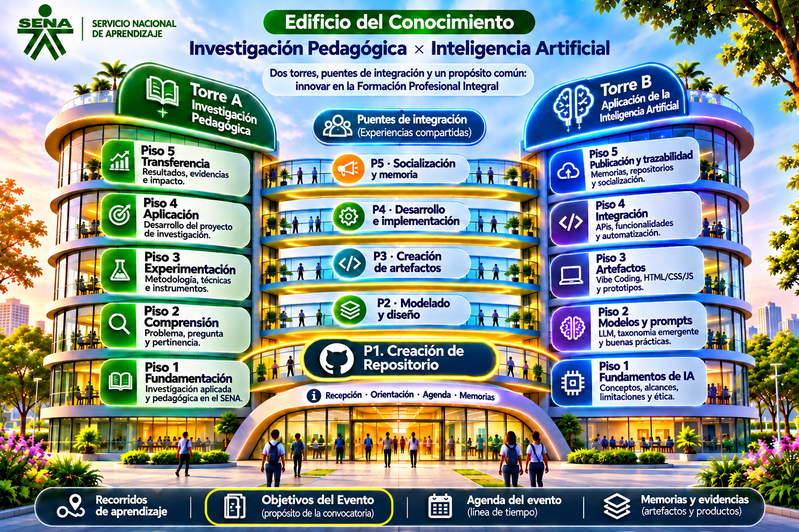
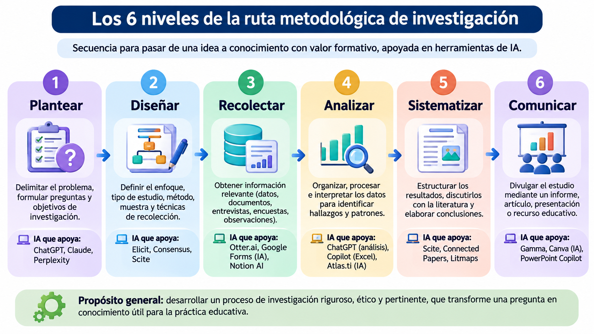
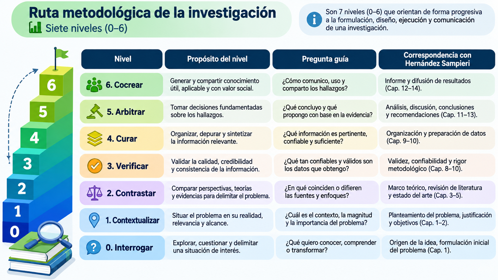

Selecciona un piso de las torres, un puente o los accesos inferiores. «Objetivos del Evento» muestra el objetivo de la convocatoria y «Agenda del evento» presenta la agenda de la semana.


Selecciona un piso de las torres, un puente o los accesos inferiores. «Objetivos del Evento» muestra el objetivo de la convocatoria y «Agenda del evento» presenta la agenda de la semana.
Ruta metodológica, taxonomía emergente y herramientas de inteligencia artificial para la investigación pedagógica.

El recorrido metodológico organiza el trabajo investigativo desde el reconocimiento de una situación hasta la transferencia y divulgación de resultados. En este artefacto se presentan siete niveles (0–6) y una correspondencia orientadora con el proceso de investigación descrito por Hernández Sampieri; esta organización no se atribuye al autor.

Esta taxonomía describe siete operaciones cognitivas que orientan el uso reflexivo de la inteligencia artificial en la investigación pedagógica. A diferencia de la ruta metodológica, no representa fases cronológicas: los procesos pueden aplicarse en distintos momentos de una investigación.
Las herramientas cambian según la perspectiva y la selección activa. Son recomendaciones orientadoras, no una validación de sus resultados.